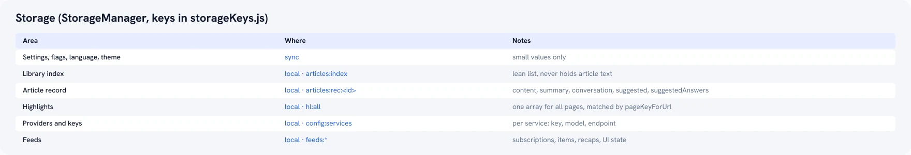

AI 생성 일러스트
Pocket 대체재를 찾고 계신가요? 2026년에 진정으로 고려해야 할 기준
Pocket의 디자인 자체가 핵심은 아니었습니다. 본질적인 질문은 실제로 어떤 용도로 사용했는가이며, 이것이 나에게 진정으로 정착할 대체재를 결정합니다.
Mozilla는 2025년 7월 8일 Pocket 서비스를 종료했습니다. 그해 11월 유예 기간이 끝나기 전에 데이터를 내보냈다면 다행이지만, 그렇지 않았다면 수년간 저장해 둔 글, 태그, 읽기 기록이 서비스와 함께 영구히 삭제되었습니다.
스크립트 · 0:22
- Pocket이 사라졌다.
- 이제 어떡하지?
- 어떤 페이지든 클릭 한 번으로 요약과 함께 저장하세요.
- 라이브러리에는 태그와 검색이 있고, Kindle로도 보낼 수 있어요.
- 무료이고, 모든 데이터는 내 기기에 남습니다.
지난 한 해 동안 많은 분들이 읽기 워크플로를 처음부터 다시 차근차근 재구축했습니다. 귀하도 그중 한 분이거나 이제 막 대체재를 찾기 시작하셨다면, 핵심 질문은 "어떤 앱이 Pocket과 가장 비슷하게 생겼는가"가 아닙니다. Pocket의 디자인 자체가 절대적이었던 것은 아닙니다. 핵심은 실제로 어떤 목적으로 사용했는가 였는지를 살펴보는 것이며, 바로 그 기준에 따라 나에게 지속적으로 정착할 대체재가 결정되기 때문입니다.
실제 사용 목적부터 명확히 파악하십시오
대부분의 사용자는 다음과 같은 목적들이 혼합된 형태로 Pocket을 사용했으며, 이 목적들이 모두 동일한 대체재를 가리키지는 않습니다.
- 빠른 캡처 — 클릭 한 번으로 저장하고 나중에 정리하기
- 나중에 실제로 읽기 — 솔직히 말해, 저장된 대부분의 글은 다시 읽히지 않았지만
- 오프라인 읽기 — 비행기 안, 출퇴근길, 침대에서 비행기 탑승 모드로 읽기
- 검색 — 몇 달 전 읽은 글의 특정 문구 하나만 기억나는 상태에서 다시 찾아내기
- 데이터를 다시는 잃지 않는 것 — 기존 Pocket 사용 시기에는 크게 의식하지 않았지만, 이제는 중요한 요소
주로 첫 번째 목적으로만 사용하셨다면 시중의 거의 모든 북마크 도구로 충분합니다. 하지만 진정한 차이가 드러나는 부분은 나머지 네 가지 영역입니다.
도구별 솔직한 현황 분석
Instapaper 는 Pocket과 가장 직접적으로 유사한 대체재입니다. 깔끔한 리더 뷰와 기본 내장된 Kindle 전송 기능을 갖추고 있으며 2008년부터 안정적으로 서비스를 이어왔습니다. Kindle 전송이 가장 핵심 기능이었다면, 안전하고 검증된 신뢰할 수 있는 선택지입니다.
Raindrop.io 는 앱 내에서 장문의 글을 읽기보다는 링크 자체를 북마크하는 용도로 사용할 때 가장 강력한 무료 옵션입니다. 읽기 경험보다는 모음집 관리와 분류 체계에 특화되어 있습니다.
Readwise Reader 는 하이라이트를 집중적으로 활용하고 해당 데이터를 다른 시스템으로 연동하고자 하는 사용자를 위해 설계되었습니다. 매우 훌륭한 도구이지만, "저장해 둔 글을 어떻게 소화할 것인가"라는 문제와는 해결 방향이 다릅니다.
Wallabag 및 기타 셀프 호스팅 옵션은 데이터 소유권이 최우선 기준인 분들에게 가장 적합합니다. 직접 서버를 운영하므로 본인 외에는 누구도 서비스를 중단시킬 수 없습니다.
AI Summary Helper 는 솔직히 말씀드려 다른 전제에서 출발합니다. 진정한 병목 현상은 글을 저장하는 행위가 아니라, 저장해 둔 목록이 그대로 쌓여 심리적 부담감으로 변하는 데 있다는 점입니다. 따라서 단순한 저장소를 넘어, 저장된 글을 일일이 다시 읽지 않고도 파악할 수 있는 AI 요약, 글 본문 전체를 색인하는 전문 검색, 그리고 저장된 글 중 동일 주제가 겹치지 않도록 다채롭게 선별하여 하나의 파일로 묶어 Kindle이나 로컬 기기로 전송해 주는 Digest 기능을 통해 실질적인 읽기의 완결을 돕습니다.
별도의 독립 웹 서비스가 아닌 Chrome 네이티브 확장 프로그램으로 동작하며, AI 요약 자체를 제외한 검색, 중복 감지, 태그 정리, 추천 등의 대부분의 작업이 기기 내부에서 완전히 로컬로 실행됩니다. 별도 계정을 만들지 않아도 충실하게 활용할 수 있으며, 클라우드 의존성을 원천 차단하고 싶다면 상용 AI 제공업체 대신 로컬 Ollama 모델과 연동하여 운영할 수도 있습니다.

빠른 의사결정 가이드
- 가장 안정적이고 검증된 Kindle 전송 워크플로가 필요하신가요? Instapaper를 권장합니다.
- 장문 읽기보다는 링크 북마크와 분류 위주로 사용하시나요? Raindrop.io를 권장합니다.
- 하이라이트를 적극적으로 활용하고, 읽은 내용의 간격 반복 복습을 원하시나요? Readwise Reader를 권장합니다.
- 데이터의 완전한 자체 소유가 타협할 수 없는 조건이신가요? 셀프 호스팅 방식의 Wallabag을 권장합니다.
- AI 요약, 온디바이스 검색, 그리고 저장한 글을 실제로 읽도록 유도하는 체계를 원하시나요? 바로 이러한 워크플로상의 간극을 해결하기 위해 AI Summary Helper가 개발되었습니다.
이 중 어떤 것도 틀린 선택은 아닙니다. 굳이 착오가 있다면, 자신이 실제로 복원하고자 하는 읽기 습관 대신 Pocket과 이름이나 외형이 가장 유사한 도구를 맹목적으로 선택하는 것입니다.
관련 글: "저장한 콘텐츠를 다시는 잃어버리지 않는 것"이 전환하려는 가장 큰 이유라면 다음 글을 읽어보세요. 개인을 위한 디지털 주권 그리고 개인 저장소에 라이브러리를 직접 보관하는 방법.
AI Summary Helper는 무료 Chrome 확장 프로그램입니다. 핵심 요약: 어떤 기능인지, 비용은 얼마인지, 데이터는 어디에 저장되는지 확인해 보세요.
Chrome에 추가